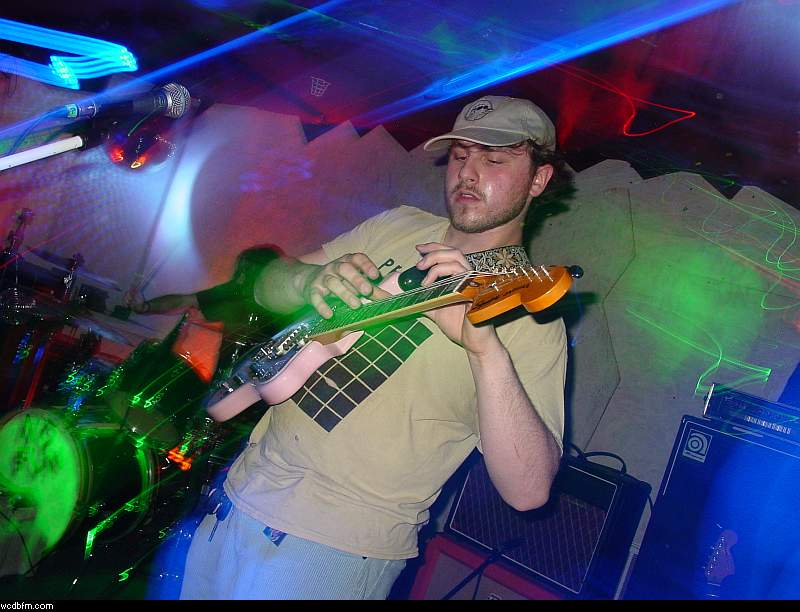
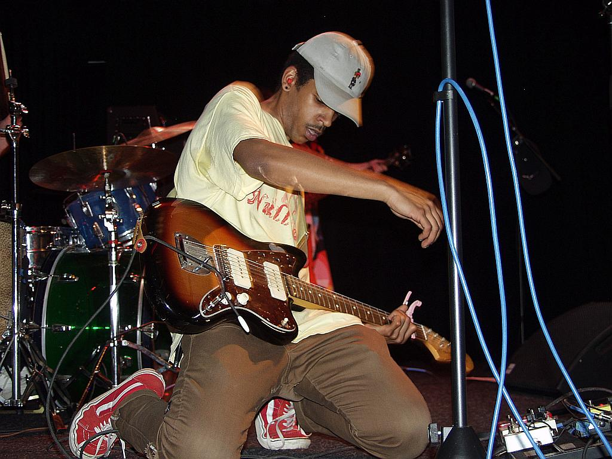
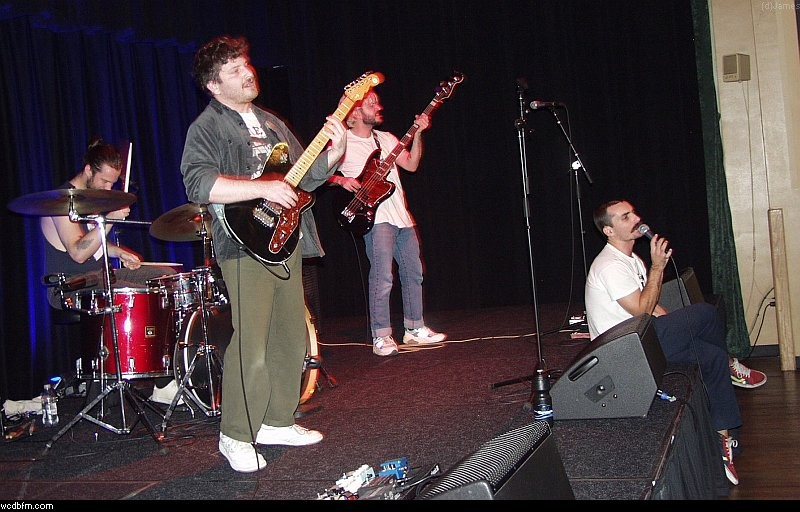

Six hours in Studio B with The Last Miller
Airwaves.
Dispatches, interviews, liner notes and the studio diary — written by the people who make the programmes.
Cindy Lee — Diamond Jubilee
Two hours of it, released to a Geocities page and nothing else. It has been in heavy rotation on three of our shows since February.

Forty-eight years on a hairline.
The station's licence renewal landed last week. A quiet milestone — and a reminder that everything WCDB sends out still arrives via the same hair-thin signal it did in 1977.
The strange afterlife of the Ampex 354.
Our oldest tape machine spent two decades in a closet before a returning alum coaxed it back to life. The capstan motor still hums like it did in 1986.

An interview with Wren Vu.
Five seasons of Insomnia Hour, in conversation — late-night listenership and programming for empty rooms.

Field recordings of the Capital Region.
A side project that turned into a season-long segment. Trains in Rensselaer, ice on the Mohawk.
Why we still play vinyl in 2026.
It's not nostalgia and it's not fidelity — it's the commitment. Cueing a 12-inch is a small public act of choosing this record over every other record.

What the spring pledge drive paid for.
Two new cartridges, a long-overdue backup transmitter, and — finally — proper acoustic panels in Studio A.
The archive
WCDB Albany 90.9FM
Student-run radio from SUNY Albany, broadcasting from Campus Center 316, 1400 Washington Avenue, Albany NY 12222.
- Live stream
- Schedule
- Recent spins
- Shows
- About
- Pledge
- Volunteer
- Contact